| 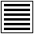 1. KKIENN Il Creativo |
2. KKUNN Il Ricettivo |
| 3. CIUNN La difficoltà iniziale |
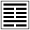 4. MONG La stoltezza giovanile |
| 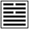 5. SU L'Attesa |
6. SUNG La Lite |
 7. SCI l'Esercito 7. SCI l'Esercito |
8. PI La Solidarietà |
| 9. SIAU CCIÚ La Forza domatrice piccola |
10. LU Il Procedere |
| 11. TTAI La Pace |
12. PI Il Ristagno |
| 13. TTUNG JENN La Compagnia fra uomini |
14. TA YU Il Possesso grande |
| 15. KKIENN La Modestia |
16. U Il Fervore |
| 17. SUI Il Seguire |
18. KU L'Emendamento delle cose guaste |
| 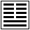 19. LINN L'Avvicinamento |
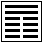 20. KUANN L'Aspetto |
| 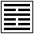 21. SCI HO Il Morso che spezza |
22. PPI L'Avvenenza |
| 23. PO Lo Sgretolamento |
24. FU Il Ritorno |
| 25. U UANG L'innocenza |
26. TA CCIU La Forza domatrice grande |
| 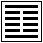 27. I L'Alimentazione |
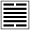 28. TA KO La Preponderanza del grande |
| 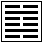 29. KKANN L'Abissale |
30. LI Il Risaltante |
| 31. HIENN L'Influenzamento |
32. HONG La Durata |
| 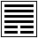 33. TUNN La Ritirata |
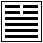 34. TA CIUANG La Potenza del grande |
| 35. TSINN Il Progresso |
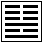 36. MING I L'ottenebramento della luce |
| 37. KIA JENN La Casata |
38. KKUI La Contrapposizione |
| 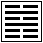 39. KIENN L'Impedimento |
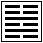 40. HIE La Liberazione |
| 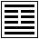 41. SUNN La Minorazione |
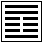 42. I L'Accrescimento |
| 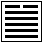 43. KUAI Lo Straripamento |
44. KOU Il Farsi Incontro |
| 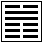 45. TTSUI La Raccolta |
46. SCIONG L'Ascendere |
| 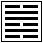 47. KKUNN L'Assillo |
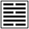 48. TSING Il Pozzo |
| 49. KO Il Sovvertimento |
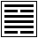 50. TING Il Crogiuolo |
| 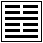 51. CENN Il Tuono |
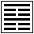 52. KENN L'Arresto |
| 53. TSIENN Lo Sviluppo |
54. KUI ME La Ragazza che va sposa |
| 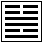 55. FONG La Copia |
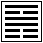 56. LU Il Viandante |
| 57. SUNN Il Mite |
58. TUI Il Sereno |
| 59. HUANN La Dissoluzione |
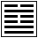 60. TSIE La Delimitazione |
| 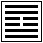 61. CIUNG FU La Veracità intrinseca |
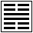 62. SIAU KO La Preponderanza del piccolo |
| 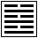 63. KI TSI Dopo il Compimento |
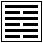 64. UE TSI Prima del Compimento |